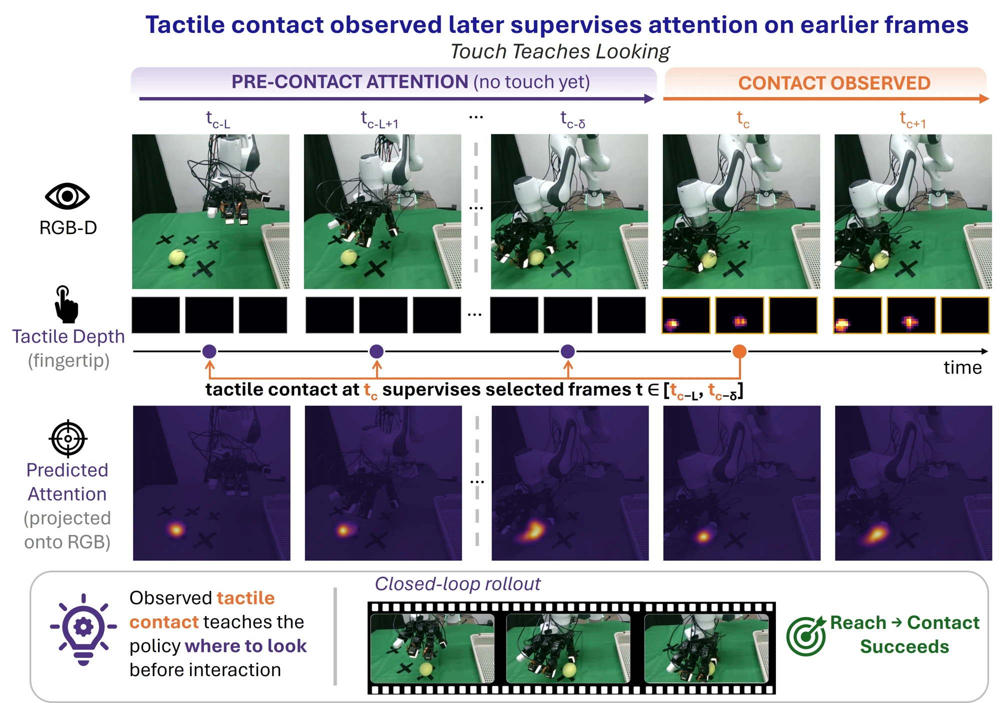
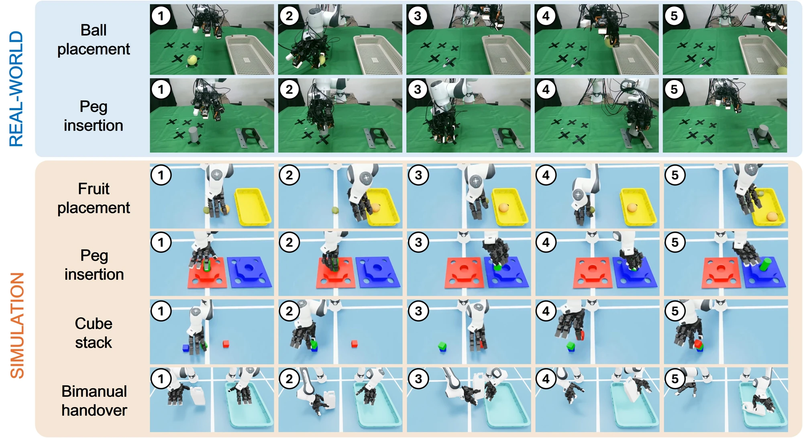
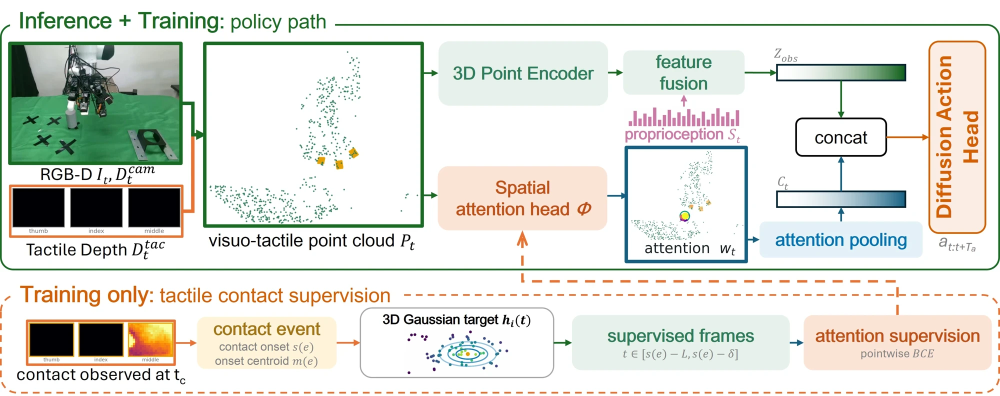
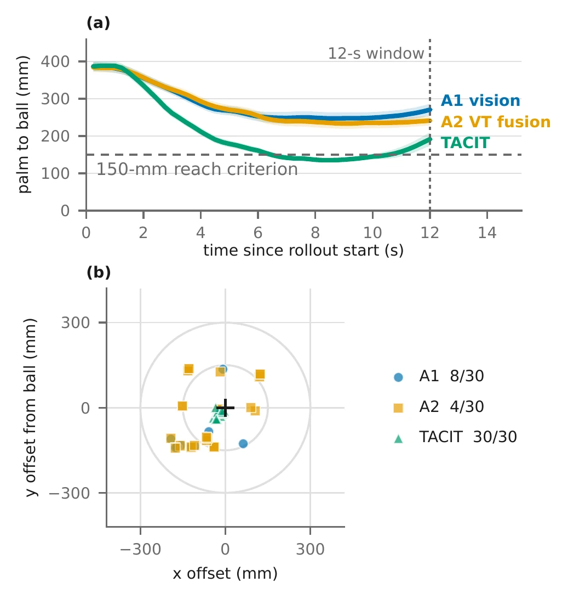
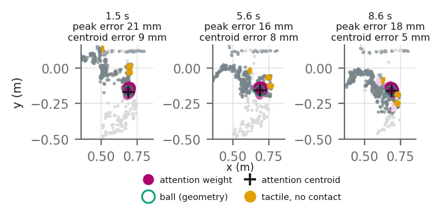

Record ordinary interaction
Teleoperation records camera observations, tactile measurements and fingertip kinematics. Contact provides a physical spatial target without per-demonstration manual annotation.
TActile Contact Informs aTtention
Contacts recorded in demonstrations provide training-only spatial supervision that improves a dexterous policy’s approach to the task object.
Overview
Contact is observed later in a demonstration. TACIT uses its measured location to supervise attention on preceding camera observations.

Teleoperation records camera observations, tactile measurements and fingertip kinematics. Contact provides a physical spatial target without per-demonstration manual annotation.
A contact-centered Gaussian supervises camera-point attention before the selected contact onset. A supervised frame may follow an earlier contact.
The learned attention head conditions closed-loop actions alongside the shared visuotactile encoding. No hindsight target is used at inference.
Real-robot ball placement and peg insertion provide the primary results. Simulation adds controlled diagnostics across tasks and a bimanual extension.

Method
A shared observation encoder and a camera-point attention branch condition a diffusion policy. Only the supervision path needs future contact.

Active tactile taxels and calibrated fingertip poses reconstruct a contact-event onset centroid in the same base/world frame as the camera cloud, without an object pose.
A Gaussian centered at the selected contact centroid provides pointwise targets on sampled camera points. Frame selection checks temporal lead and spatial support.
The head’s camera-point weights produce a pooled feature, augmented by peak relevance and scaled entropy. The projected summary joins the observation encoding.
The head scores raw points independently; visual scores are primarily conditioned on base-frame XYZ. The attention weights are a policy-conditioning signal, with no demonstrated semantic object detection or explanatory interpretation.
Training target
This demonstration visualization shows the future-contact Gaussian training target. It is not a policy prediction.
Primary real-robot benchmark
Ten demonstrations per task on a Franka FR3 with a LEAP hand and three 9DTact fingertips. The main comparison is input-matched A2 → TACIT.
Ball placement · task success
10.0%→66.7%
A2: 3/30 TACIT: 20/30
Peg insertion · task success
20.0%→73.3%
A2: 6/30 TACIT: 22/30
Primary evaluated checkpoints; these percentages are not means across training seeds. Source: manuscript Abstract and Table II.
| Policy | Ball reach | Ball success | Peg reach | Peg success |
|---|---|---|---|---|
| A1 · DP3 Vision-only reference | 8/30 | 6/30 | 14/30 | 13/30 |
| A2 · 3D VT fusion Input-matched baseline | 4/30 | 3/30 | 6/30 | 6/30 |
| TACIT Contact-supervised attention | 30/30 | 20/30 | 30/30 | 22/30 |
Reach: the palm enters the 150 mm grasp-approach region in the first 12 seconds. TACIT reaches in every trial at these evaluated checkpoints; remaining failures occur after arrival.
Task success: the ball is released inside the basket, or the peg remains inserted in the fixture, within the 30-second execution window. Reaching alone does not meet either task criterion.
A2 and TACIT both use 600 camera points + 900 tactile points. A1 uses 1,500 camera points and is a reference baseline; A1–A2 changes both modality and visual sampling budget, so it is not a controlled tactile ablation.
Five demonstrated placement regions, with no held-out real spatial split. Pooled counts are descriptive; placements are the independent unit. Observed task success is higher for TACIT than A2 at all five ball regions and four of five peg regions. Sources: manuscript §§4.3–4.4, §5.1; real-placement audit.
Illustrative clips at the same nominal placement, played at 1.5× source speed. Each shows a segment of a recorded trial; aggregate outcomes are reported above.

Mechanism evidence
Three training seeds compare input-matched fusion and architecture-matched attention controls on real ball placement and simulated peg insertion. This study does not cover real peg.
| Measure | A2 | A2.5 | TACIT-contact | TACIT |
|---|---|---|---|---|
| Real ball reached Out of 30 per seed | 4, 10, 9 | 6, 4, 3 | 29, 21, 27 | 30, 27, 26 |
| Real ball placed Out of 30 per seed | 3, 3, 7 | 2, 3, 2 | 14, 17, 24 | 20, 15, 19 |
| Simulated peg moved Out of 81 per seed | 47, 28, 27 | 33, 35, 59 | 71, 81, 81 | 80, 77, 81 |
| Simulated peg inserted Out of 81 per seed | 1, 1, 2 | 3, 1, 5 | 14, 16, 17 | 12, 13, 24 |
A2 has no attention head. A2.5 retains TACIT’s head and policy conditioning with λatt = 0. Its head is still trained by the action loss. Removing explicit attention supervision does not recover the supervised variants’ count ranges.
TACIT-contact supervises detected contact intervals; TACIT supervises observations preceding the selected onset. There is no consistent ordering across three seeds in either domain. The controls limit total supervision-count differences but do not fully match event-level allocation.
In the displayed real-ball rollout, attention assigns its peak near the task object before tactile activation. This is spatial attention on sampled camera points, evaluated against an independently located geometric ball center.

Simulation · controlled diagnostic
Simulation evaluates task-specific policies and unseen in-hull coordinates. It provides controlled diagnostics of stage progression within the tested workspace; absolute task completion remains limited.
Held-out simulation uses positions absent from demonstrations but inside each task’s training convex hull. These diagnostics examine object interaction beyond the exact demonstrated coordinates.
These are stage-progression diagnostics. They do not establish performance outside the demonstrated workspace. No policy is transferred between simulation and hardware.
Source: manuscript §§4.2, 4.4 and 5.2, Table V.
| Task | A1 | A2 | TACIT |
|---|---|---|---|
| Fruit placement | 4.9 ± 1.3% (11/225) | 0.0 ± 0.0% (0/225) | 4.9 ± 2.3% (11/225) |
| Peg insertion | 2.5 ± 3.5% (2/81) | 1.2 ± 1.7% (1/81) | 14.8 ± 5.2% (12/81) |
| Cube stack | 5.3 ± 0.0% (12/225) | 10.7 ± 13.2% (24/225) | 20.9 ± 6.7% (47/225) |
| Bimanual handover Architectural extension | 43.3 ± 2.7% (39/90) | 50.0 ± 5.4% (45/90) | 54.4 ± 12.3% (49/90) |
TACIT improves peg and cube success, ties A1 on fruit, and shows no clear advantage on handover. The effect is not uniform across tasks.
Scope & limitations
Real evaluation measures robustness within demonstrated regions. Held-out simulation tests unseen in-hull coordinates without distractors or object-identity changes.
The primarily coordinate-conditioned head has not been shown to perform semantic object detection. The evidence does not establish generalization outside the training workspace or exclude a coordinate-conditioned lookup over the demonstrated regions.
TACIT primarily improves approach. Grasp stabilization, insertion and release remain unresolved. Eliminating observed pre-arrival failures is limited to the evaluated primary checkpoints.
Three-training-seed comparisons cover real ball and simulated peg only. Placements are the independent unit; pooled trial counts are descriptive. All real trials share one operator, arm-hand system and camera placement.
Citation
Cite the current arXiv preprint. Publication details can be updated after peer review.